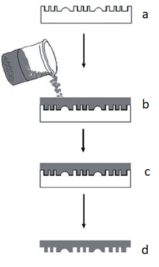

Microfluidics concerns design, fabrication and experiments of miniaturized fluidic systems, which has undergone
rapid developments during the last decade [1]. As an interdisciplinary area, this rapidly growing field of
technology has found numerous applications in biomedical, diagnostics, chemical analysis, automotive and
electronics industries. The sorting of micron-sized objects in a continuous flow is required for a wide
variety of applications, including chemical syntheses, mineral processing and biological analyses.
PDMS is used for the construction of microfluidic devices using the lithography and a mold replication
process. The microchannels formed in the PDMS are sealed with glass using a sealing process.
One of the most commonly used techniques to obtain irreversible seals is by
exposing surfaces to oxygen plasma [2].

Figure 1. Diagram of PDMS development and design microfluidic platform [3].
How it is categorized?
The passive and active separation techniques are categorized into different methods based on the operating principles.
In each method, first, the underlying operating principle is thoroughly discussed, and then different design variants
employing the same principle are presented and discussed.
The different design variants have distinctive advantages
over a basic design employing only the basic principle.
Figure 2. Schematic illustration of pinched flow fractionation (PFF)[4].
Example
Pinched flow fractionation (PFF) is a passive sorting technique that can be used for continuous sizing of particles in a microchannel by employing
the characteristics of laminar flow [5] The fluid containing the particles to be sorted is focused by a particle-free fluid, as depicted in Fig. 2.
The microchannel includes a ‘pinched segment’ where particles are aligned to one of the sidewalls by controlling the flow rates of both fluids.
In laminar flow, a particle has a tendency to flow along the streamline passing through its center of mass. For smaller and larger particles,
the streamlines passing through their center of mass are closer toward the channel wall and center of the channel, respectively.
The mixture of fluid and particles coming out of the pinched segment is separated by the spreading streamlines according to their sizes [5].
References
.
1) Whitesides, G. (2006) The origins and the future of microfluidics. Nature 442, 368–373
2) Sánchez, A. (2014) Síntesis y caracterización de puntos cuánticos de CdSe con aplicaciones en celdas fotovoltaicas con configuración FTO/TiO2/CdSe/ZnS. Universidad de Guanajuato.
3) Gutierrez J. (2019) Diseño y desarrollo de una plataforma microfluídica de
encapsulación para análisis genómico de células individuales. Universidad de Cantabria.
4) Sajeesh P. and Kumar A. (2013) Particle separation and sorting in microfluidic devices: a review. Springer.